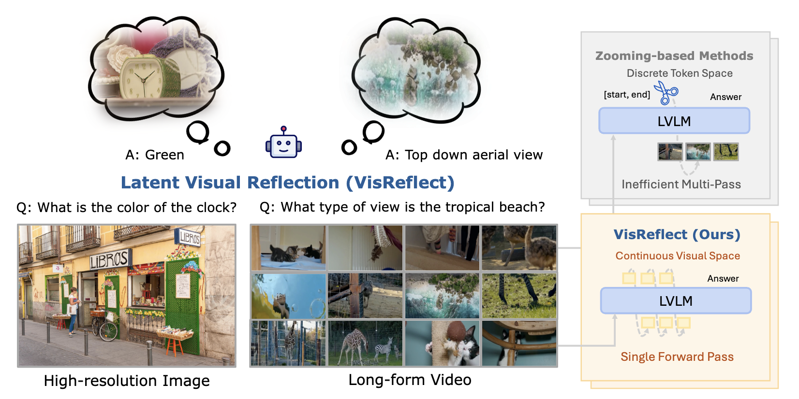
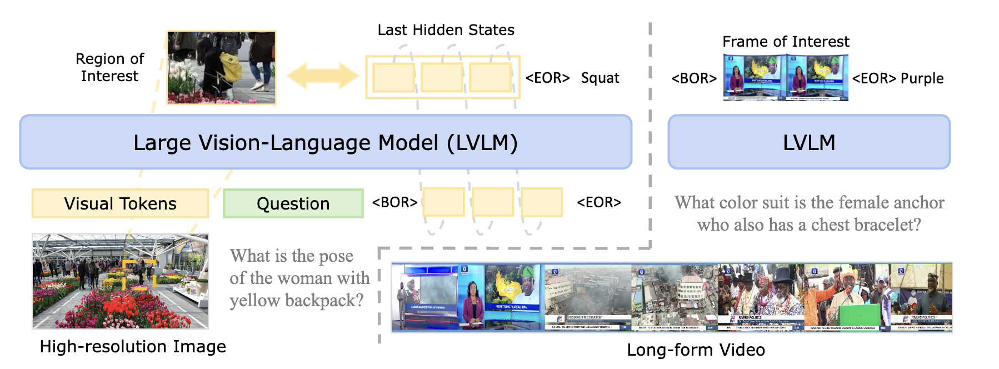
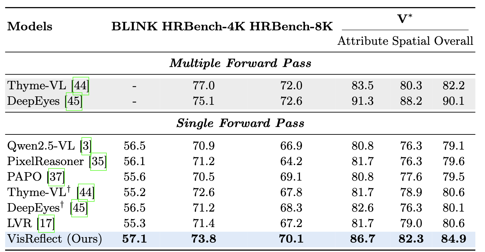
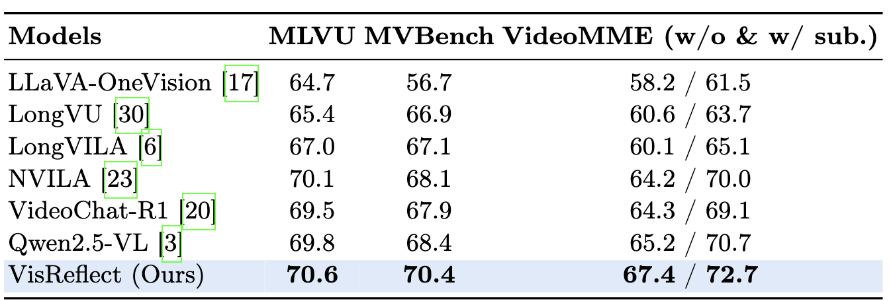
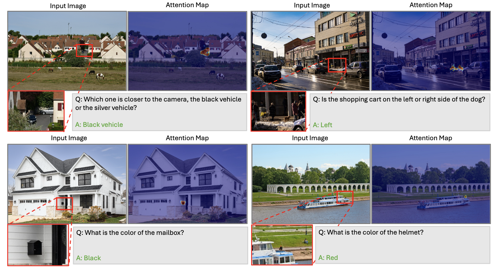

Large Vision Language Models (LVLMs) have achieved remarkable success on vision–language tasks, yet fine-grained perception over high-resolution images and long-context videos remains challenging. As the number of visual tokens increases, the visual attention sink phenomenon becomes increasingly severe, causing irrelevant tokens to absorb a disproportionate amount of attention mass. Recent approaches attempt to mitigate this issue by explicitly predicting bounding boxes or temporal spans and re-encoding the cropped visual regions. Such methods depend on unreliable numeric localization in the discrete token space and incur significant computational overhead due to additional forward passes. In this work, we propose VisReflect, a simple yet effective framework that improves fine-grained perception in long visual contexts through latent visual reflection. Instead of decoding intermediate predictions into discrete tokens, the model generates continuous visual reflection that represents question-relevant visual features in the latent space. These reflections selectively emphasize salient regions or frames, guiding attention towards relevant visual tokens within a single forward pass. We conduct comprehensive evaluations on challenging high-resolution image benchmarks, including BLINK, V*, and HRBench-4K/8K, as well as video understanding benchmarks such as MVBench, VideoMME, and MLVU. Our method consistently improves over strong baselines, achieving gains of 4.1% on image benchmarks and 1.8% on video benchmarks. Compared with zooming-based methods, our model achieves comparable performance while reducing inference time by roughly 44% on video understanding.




